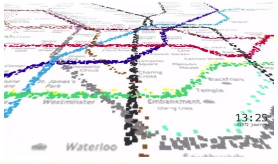

حملونقل برای لندن (TFL) بااحتیاط وارد حوزه داده باز شد. اما در حال حاضر، پنج سال پس از شروع انتشار مجموعه دادههای کلیدی خود، بسیاری در لحظه، برنامههایی که بر اساس صدها دادههای آن ساخته شدهاند، به میلیونها کاربر حملونقل لندن میرسد و دهها میلیون صرفهجویی در زمان را به مشتریان اصلی خود، برای سرمایهگذاری نسبتاً کم ارائه میدهد. تفکر داده باز در حال حاضر در این سازمان «جای گرفته است» و تجربه TFL با داده باز منجر به این شده است که دیگر مقامات حملونقل ملی نیز پا جای پای آنها بگذارند.
- داده حملونقل با رویکرد داده باز بسیار سازگار است. بازار توسعه برنامههای مبتنیبر دادههای حملونقل بسیار دستیابیپذیر است.
- TFL بااحتیاط وارد حوزه داده باز شد. تصمیم برای باز کردن داده TFL تا حد زیادی یک تصمیم تجربی بود، زیرا مدل کردن پرونده کسبوکار برای داده باز دشوار بود. ریسک نتیجه داد: TFL در حال حاضر به داده باز تبدیلشده است و قادر به نشان دادن مزایای سیاست داده باز برای سایر ذینفعان در این زمینه است که ممکن است هرگز در موقعیتی نبوده باشند که خودشان به جهش اولیه اعتماد کنند.
- TFL میدانست که مشتریان آن بهطور فزایندهای میخواهند به اطلاعات مربوط به خدمات حملونقل در سراسر پلتفرمهای تلفن هوشمند دسترسی داشته باشند. این یک عامل کلیدی در تصمیمگیری برای حرکت به سمت داده باز بود، زیرا جایگزین - توسعه اپلیکیشنهای داخلی که در خدمت هر پلتفرم گوشی هوشمند باشد - یک اقدام پرهزینه بود.
- نوآوری در بازار برنامههای حملونقل زمانی کند میشود که دادههای شخصی به بخش مهمتری از این ترکیب تبدیل شوند. برنامههایی مانند گوگل اکنون به لطف دادههای مکانی که گوگل جمعآوری میکند و برای ارائهدهندگان رقیب در دسترس نیست، این قابلیت را دارند که کاربران را در انتقال خدمات مبتنیبر داده قفل کنند. درعینحال، TFL درحالتوسعه خدمات تلفن هوشمند است که شامل یک عنصر پرداخت است و بنابراین باید بهصورت داخلی توسعه یابد تا جزئیات پرداخت کاربران را ایمن نگه دارد.
پیشینه
حملونقل برای لندن (TFL) یک سازمان دولتی محلی است که مسئول اجرای استراتژی حملونقل و مدیریت خدمات حملونقل در سراسر پایتخت بریتانیا است. این سازمان تقریباً تمام جنبههای حملونقل در بزرگترین شهر اروپا را با ۲۴ میلیون سفر که هرروز در شبکه حملونقل لندن انجام میشود، زیر نظر دارد.
علاوهبر مدیریت اتوبوسهای لندن، شبکه مترو، راهآهن داکلندز، مترو و تراملینک، طرح اجاره دوچرخه شهر، خدمات رودخانهای، ایستگاه قطار و واگنهای کابلی خط هوایی امارات را اجرا میکند که از رودخانه تمز به شرق شهر در گرینویچ میروند. این جاده ۶۰۰۰ چراغ راهنمایی شهر و شبکه ۵۸۰ کیلومتری جادههای اصلی را کنترل میکند. این قانون تاکسیهای لندن و وسایل نقلیه کرایهای خصوصی را تنظیم میکند و طرح هزینه ازدحام شهر را اجرا میکند.
TFL بخشی از قدرت لندن بزرگ (GLA) است. این شرکت در مالکیت عمومی است و توسط هیئتمدیره به ریاست شهردار لندن اداره میشود. بودجه آن توسط «پرداختکنندگان و مالیاتدهندگان» تأمین میشود. در سال ۱۵/۲۰۱۴، نزدیک به نیمی از (۴۷ %) بودجه ۱۰.۹ میلیارد پوندی آن از کرایهها و سایر درآمدها حاصل شد (برای مثال، هزینه ازدحام). یکچهارم (۲۵ %) از طریق دپارتمان حملونقل بریتانیا و GLA تأمین مالی شد و بقیه از قرض گرفتن، جنبشهای نقدی و بودجه متقاطع TFL تشکیلشده بود که بهعنوان یک نوآور در زمینه خدمات حملونقل مشهور است و مقیاس عملیات آن به این معنی است که سرمایهگذاری اولیه در فنآوری جدید اغلب حس تجاری خوبی ایجاد میکند.
«شما نمیتوانید از قبل ثابت کنید که باز کردن داده به چه چیزی منجر خواهد شد. بنابراین درنهایت تصمیم گرفتیم که به دنبال آن برویم و ببینیم چه اتفاقی خواهد افتاد».
Vernon Everitt , TfL
«TFL سفر شگرفی را آغاز کرده است».
امر کولمن، مسئول حملونقل لندن بزرگ / TransportAPI
دادهها
TFL ۶۲ مجموعه داده جداگانه را در دسترس قرار میدهد. اینها ترکیبی از فیدهای لحظهای (مانند حرکت مترو، اختلال ترافیک بهصورت زنده، ورود اتوبوس بهصورت زنده، و API برنامهریز سفر TFL)، مجموعه دادههای ثابت (مانند جداول زمانی، مکانهای ایستگاه، و تسهیلات ایستگاه) و مجموعه دادههای شفافیت محور (جزئیات عملکرد عملیاتی، پاداش مدیران، و غیره) هستند.
TFL به کاربران مجدد داده نیاز دارد تا برای دسترسی به داده خود با آنها ثبتنام کنند. در طول فرآیند ثبت، کاربران با مجموعهای از شرایط صدور مجوز موافقت میکنند، درحالیکه بر اساس نسخه ۲ مجوز باز دولت، شامل برخی شرایط اضافی مهم است. علاوهبر تنظیم محدودیتهای نسبتاً منطقی بر روی تقاضا (تعداد تماسها) هر کاربر میتواند APIهای داده را ایجاد کند، این شرایط برای حفاظت از برندینگ TFL و عدم رد کردن محصولات ایجادشده بهعنوان محصولات رسمی TFL ادغام میشوند. کاربران باید به TFL اطلاعات دقیقی در مورداستفاده موردنظر خود از داده قبل از دسترسی به آن بدهند. در این رابطه، داده منتشرشده توسط TFL با تعریف باز مطابقت ندارد. بااینحال، ازنظر داخلی و خارجی، TFL بهعنوان «داده باز» و بهطورکلی ناظران به آن اشاره میکند. وقتی در این مورد از فیل یانگ، رئیس TFL آنلاین سؤال شد، پاسخ داد:
تا جایی که به توسعهدهندگان مربوط میشود، من فکر میکنم که آنها آن را داده باز در نظر میگیرند، مگر اینکه دیدگاه خود نسبت به اینکه داده باز چیست را محدود کنند. واقعاً [آنچه ما تصریح می کنیم این است که] فوقالعاده سبک است، و این واقعیت که احتمالاً توسعهدهندگان بیشتری را بر روی مواردمان به کار میگیریم و اپلیکیشنهای بیشتری بر روی موارد ما ساخته میشوند، بیش از هر جای دیگری در جهان، نشان میدهد که نسبتاً باز است.
وبسایت TFL مشخص میکند که هر فید داده بهطور منظم، از هر ۳۰ ثانیه (تابلوهای خروج مترو) تا سالانه (داده شمارش مسافران زیرزمینی لندن) بهروزرسانی میشود. داده TFL تلاشهایی را برای حذف هرگونه اطلاعات شخصی ارائه میکند. بااینحال، به نظر میرسد که یک مجموعه داده یک ریسک حریم خصوصی را تحمیل میکند: در آوریل ۲۰۱۴ مهندس نرمافزار جیمز سیدل نشان داد که چگونه آمار استفاده از چرخه استخدام متصل به شناسه مشتریان میتواند بهطور نظری در حضور «هر سیگنال شخصی ظاهراً بیضرر» (مانند یک نامنویسی فوراسکوئر، پست فیسبوک، تصویر، یا توییتی که یک فرد را به مکان استخدام چرخه مرتبط می کند) ناشناسسازی شود، که منجربه افشای «یک گزارش دقیق [از] زندگی شخصی در لندن» میشود. TfL گفت که گنجاندن شناسههای مشتری در دادهها یک خطای اداری بوده است. آنها از آن زمان حذف شدهاند.
مسیر باز شدن
سفر TFL برای باز شدن در سال ۲۰۰۷ آغاز شد، زمانی که تیم توسعه، به رهبری فیل یانگ، مجموعهای از ویجتهای قابل تعبیه را منتشر کرد. این «قطعات کد» به کاربران اجازه میدهد تا محصولات آنلاین TFL مانند بهروزرسانیهای سفر زنده را در خدمات جمعآوری محتوای وب محبوب مانند NetVibs و iGoogle و همچنین وبسایتهای سفارشی ادغام کنند. این انتشار بخشی از یک استراتژی برای تشویق مشتریان به بررسی وضعیت خطوط متروی لندن در آخر هفتهها بود، زیرا این شبکه تحت برنامه شدیدی از کارهای بهبود قرار داشت. فیل یانگ با بحث در مورد انگیزه تیم خود برای توسعه ویجتهای قابل تعبیه در سال ۲۰۰۷، به روندهایی در میان تیمهای داده دیگر که در فضای خدمات عمومی کار میکنند اشاره میکند، و بهطور خاص پشتصحنه بیبیسی، یک شبکه توسعهدهنده که اکنون بهطور مشترک توسط تام لوسمور تأسیسشده است (که بهعنوان متولی سابق دموکراسی آنلاین شهروندان بریتانیا، موسسه خیریهای که جامعه مایت را اداره میکند، یک نقشآفرین کلیدی در پروژه داده باز دیگر است که در این گزارش منتشرشده است)».
کادر ۱
۲۰۰۷ - راهاندازی «ویجتهای قابل تعبیه برای اخبار سفر زنده»، نقشه و برنامه سفر.
سال ۲۰۰۹ - منطقه ویژهای برای توسعهدهندگان در وبسایت TFL راهاندازی شد.
۲۰۱۰ - مرکز داده لندن راهاندازی شد. فیدهای بیدرنگ اضافی با صدها توسعهدهنده ثبتشده راهاندازی شد.
۲۰۱۱ - محل قطار زیرزمینی لندن و برنامهریز سفر API ها راهاندازی شد. توسعهدهندگان ثبتشده به بیش از ۱۰۰۰ نفر افزایش مییابند.
۲۰۱۲ - API ورود اتوبوسها، پورتال داده حملونقل بازیهای المپیک و پارالمپیک لندن ۲۰۱۲ را راهاندازی کرد. بیش از ۴۰۰۰ توسعهدهنده ثبتنام کردهاند.
۲۰۱۳ - بیش از ۵۰۰۰ توسعهدهنده، ۳۰ منبع داده، صدها برنامه کاربردی در بازار که به میلیونها مشتری خدمات میدهند. دسترسی و جادههای جدید تغذیه میشوند.
ما هرگز واقعاً با بیبیسی دراینباره درگیر نشدیم، اما آنچه را که در حال اتفاق افتادن بود مشاهده کردیم. ما یک تیم دیجیتال کوچک از توسعهدهندگان مشتاق بودیم، بنابراین ما هم بهاندازه دیگران به این دنیا و کارهایی که میشد انجام داد علاقه داشتیم. و ما بهسرعت دیدیم که دادههای ما احتمالاً جالبتر از دادههای بیبیسی بودند.
در سال ۲۰۰۹، با درک اینکه توسعهدهندگان وب میخواهند TFL فراتر برود، فیل یانگ و تیم او یک منطقه اختصاصی را در وبسایت TFL برای توسعهدهندگان وب راهاندازی کردند. جدول زمانی انتشار داده TFL در شکل ۱ نشانداده شده است. تجربه، بازاریابی و ارتباطات و قهرمان داده باز TFL، این سفر تاکنون را توصیف میکند:
بین سالهای ۲۰۰۷ و ۲۰۱۰، ما کمی احساس راه رفتن میکردیم. و سپس تا سال ۲۰۱۱ ما شاهد بودیم که نهتنها شما باید دادهها را آزادانه و آزادانه در دسترس قرار دهید، بلکه باید این کار را به شکلی انجام دهید که مردم بتوانند بهراحتی مصرف کنند. ازاینرو، توسعه API های پیچیدهتر بهطوریکه مردم بتوانند آن را به برق بزنند و بازی کنند. و سپس در سال ۲۰۱۲، API خروج از اتوبوس ما راهاندازی شد، و ما کارهای زیادی برای المپیک انجام دادیم که به آن انگیزه بیشتری داد.
اکنون TFL داده دقیق و زمان واقعی سفر را بهعنوان مکمل زیرساخت حملونقل در هدف برتر آنها از خدمت به کاربران حملونقل لندن میبیند.
ورنون اوریت و فیل یانگ موافق هستند که «سیاست مشخص GLA به TFL کمک کرد تا انتشار داده را اولویتبندی کند و سریعتر ازآنچه در غیر این صورت بود به آن دست یابد». ورنون اوریت معتقد است که «هیچکس نیاز به متقاعد کردن اساتید سیاسی ما در GLA ندارد که این ایده خوبی است زیرا تنظیمات پیشفرض آنها قبلاً باز بوده است».
امر کولمن در سال ۲۰۰۹ برای یک سال از شورای بارنت (یکی از ۳۲ بخش لندن) به GLA رسید. او در پاسخ به کاهش قریبالوقوع بودجه بخش دولتی و تمرکز جدید بر شفافیت دولت، به دنبال راهی برای همکاری بخشهای لندن بود. یکی از سیاستهایی که او ابداع کرد، پیشنهادی در مورد داده باز بود که درنهایت تبدیل به مرکز داده لندن میشد. این درگاه داده باز، همکاری در سرتاسر بخشهای لندن را به خطر میاندازد و هم به فشارهای داخلی برای صرفهجویی در پول و تحریک رشد اقتصادی در شهر، و به تقاضاهای خارجی ناشی از علاقهمندان به داده باز، و بهخصوص کمپین داده آزاد روزنامه گاردین (که از سال ۲۰۰۶ اجراشده بود) پاسخ میدهد تا داده عمومی را در اختیار عموم قرار دهد.
پیش از انتشار مرکز داده لندن، کلمن یک دعوت باز را برای کاربران بالقوه این درگاه در جامعه توسعهدهنده، با کمک پل کلارک، یکی از چهرههای شناختهشده در جامعه داده باز دولت، منتشر کرد که سپس بهعنوان پیمانکار در بخش پیشرو در وب دات یو آر یو کار میکرد. دو رویدادی که پسازآن اتفاق افتاد، بین ۶۰ تا ۱۰۰ شرکتکننده را به خود جلب کرد و درخواست برای داده، بهشدت بر جرم و حملونقل تمرکز داشت. کلارک مجموعه افرادی را به خاطر میآورد که در آن حضور داشتند:
این فقط علاقهمندان به صندلی راحتی یا هکر اتفاقی یا علاقهمندان به قطار نبود. افرادی در آنجا بودند که تلاش میکردند تا کسبوکارها را از استفاده مجدد و افزودن ارزش به مجموعه دادههای عمومی ایجاد کنند.
مشخص شد که هر اقدام به کار انداختن مرکز داده لندن باید داده TFL را در آنجا داشته باشد. اما کولمان سکوت در TFL را توصیف میکند تا داده خود را بهصورت آشکار منتشر کند که «درست تا سیم» ادامه داشت، همانطور که او برای راهاندازی درگاه برنامهریزی کرده بود:
آنها نمیخواستند TFL به یک سفر عظیم برسد. حالا در جای بسیار مثبتی قرار دارد، بنابراین نمیخواهم به اینکه چقدر آن موقع سخت بود، ادامه دهم. اما منصفانه است که بگوییم نگرانیهایی وجود دارد. آنها میخواستند دادهها را به پول تبدیل کنند. و آنها نگران پاسخگویی بودند … پس ما کارهای زیادی انجام دادیم که به آنها توضیح دهیم، خب، این واقعاً اقتصاد این کار نیست.
آنچه که بهعنوان سکوت از خارج از سازمان به نظر میرسید، در داخل TFL بهعنوان احتیاط منطقی تجربه شد. ورنون اوریت میگوید: «باید به خاطر داشته باشید که مقامات حملونقل دوست دارند همهچیز را کنترل کنند». فیل یانگ داستان را از دیدگاه خود میگوید:
در داخل سازمان دیدگاههای مختلفی وجود داشت … و مردمی که این عقاید را داشتند دلیلی داشتند که در پشت سر آنها منطق وجود داشته باشد … احتمالاً حدود یک سال بحث و مناظره طول کشید، با GLA، با Emer … ما به محلی رسیدیم که بحث تمام شده بود و مسیر درست شده بود.
امروزه، اوریت، یانگ و کلمن موافق هستند که اقتصاد توسعه خدمات اطلاعاتی برای مشتریانی که خواهان دسترسی از طریق گوشیهای هوشمند هستند، یک عامل حیاتی در تصمیم TFL برای انتشار داده آنها بود. کانالهای مصرف داده TFL طوری تنظیم شدند که بهسرعت متنوع شوند و مسافران خواهان دسترسی به خدمات اطلاعاتی در این حرکت بودند:
این احتمال وجود داشت که مقامات پول زیادی را صرف طراحی برنامههایی کنند که تقاضای مشتری را برآورده نکنند و پول، درآمدی که تولید شد، کوچک باشد. درحالیکه سود مستقیم برای مسافر در حال سفر (انتشار داده بهصورت باز) بسیار زیاد بود، که میتواند به TFL برگردد. و این درواقع چیزی است که اتفاق افتاد.
اما در آن زمان، TFL آگاه بود که تصمیم برای باز شدن تا حد زیادی یک تصمیم تجربی بود. اگر اوریت سعی میکرد بنشیند و یک پرونده بازرگانی حملونقل معمولی را بنویسد، باز میگفت:
شما نمیتوانید از قبل ثابت کنید که باز کردن داده به چه چیزی منجر خواهد شد. پس بالاخره تصمیمی که گرفتیم این بود که فقط برویم دنبالش و ببینیم چه اتفاقی میافتد.
برآمد
هدف اصلی TFL در انتشار آزاد داده خود، تشویق توسعه نرمافزارهای کاربردی در بازار بود. برای موفقیت این سیاست، آنها به کسبوکارهای موجود یا جدید نیاز داشتند تا محصولات و خدمات جدید را بر اساس داده TFL توسعه دهند، نرمافزارهای کاربردی که به پایه مشتری TFL خدمت میکردند و به تقاضای رو به رشد کاربران حملونقل برای دسترسی به داده درباره خدمات حملونقل TFL از طریق تلفن هوشمند پاسخ میدادند.
در سال ۲۰۱۰، یک سال پس از راهاندازی منطقه توسعهدهندگان ویژه وبسایت TFL، تعداد کاربرانی که برای استفاده از داده TFL ثبتشده بودند، صدها نفر بود. سال بعد، ۲۰۱۱، تعداد آن بیش از هزار نفر بود. در سال ۲۰۱۲، تعداد کاربران به بیش از ۴۰۰۰ نفر افزایش یافت و تا سال ۲۰۱۳ بیش از ۵۰۰۰ کاربر برای استفاده و تبدیل داده TFL ثبت شدند.
TFL قادر به بیان ارقام دقیق برای تعداد توسعهدهندگان در دسترسی به داده خود است زیرا توسعهدهندگان باید با آنها ثبتنام کنند تا به داده دسترسی داشته باشند. بااینحال، فراتر از این، TFL نمیتواند بهطور مستقیم مشخص کند که چه تعداد نرمافزار کاربردی از داده خود استفاده میکنند یا این نرمافزارهای کاربردی به چه تعداد کاربر میرسند. بررسی دانلود داده و آمار دسترسی میتواند گمراهکننده باشد، زیرا «بسیاری از توسعهدهندگان ملک نرمافزارهای کاربردی خود را از معماری سرور خود تغذیه میکنند و یک ارتباط واحد با داده TFL دارند».
هرساله، TFL تلاش میکند تا برداشت داده خود را بهطور غیرمستقیم با شمارش نرمافزارهای کاربردی که از داده در پلتفرمهای تلفن هوشمند بزرگ استفاده میکنند، مشخص کند. آخرین شمارش، که در نوامبر ۲۰۱۴ انجام شد، ۳۶۲ نرمافزار تلفن هوشمند را با استفاده از داده TFL نشان داد.
در گزارشی که در ماه می ۲۰۱۳ منتشر شد، Deloitte تحلیلی از اینکه چه تعداد از مردم نرمافزارهای کاربردی را با استفاده از داده TFL دانلود کردهاند، بر اساس ابزار تحقیق اختصاصی ارائهشده توسط xy.net فراهم کرد. آنها برآورد کردند که چنین برنامههایی در سال ۲۰۱۲ تقریباً ۴ میلیون بار دانلود شدهاند (۳، ۹۷۹، ۳۰۰).
کولمان مشتاق انتقال سرعتی است که توسعهدهندگان با استفاده از آن، انتشار داده جدید TFL را انجام داده و آنها را به نرمافزارهای کاربردی تبدیل میکنند، تغییری که ورنون اوریت را نیز تحت تأثیر قرار میدهد:
زمانی که ما دادههای ایستگاه اتصال را بهصورت زنده در نظر گرفتیم، دو محصول ۴۸ ساعت بعد در فروشگاه اپل زندگی میکردند.
اگرچه این باغ نرمافزار کاربردی پررونق، که از بذرهای داده TFL رشد کرده، تمرکز اصلی اکثر تحقیقات و نظارت در این حوزه است، مهم است که به دیگر کاربران پیشنهاد داده TFL توجه کنیم، ازجمله برنامهریزی کسبوکار برای مکانهای فروشگاههای جدید و ادارات، و همچنین دانشگاهیان که به مسائلی مانند ایمنی جاده نگاه میکنند. کلمن کار مرکز تحلیل فضایی پیشرفته در کالج لندن را در ایجاد و محدود کردن تصویرسازی از داده TFL برجسته میکند (برای یک بررسی به شکل ۲ مراجعه کنید).

تأثیر
تأثیر سیاست داده باز TFL تا به امروز چیست؟ لنزهای متعددی وجود دارند که از طریق آنها میتوانید این سؤال را ببینید. آیا TFL با اتخاذ سیاستی که بهطور مؤثر بخش اعظم توسعه نرمافزارهای کاربردی خود را برونسپاری میکند، در پول صرفهجویی میکند؟ اگر زمان پول باشد، TFL با اطلاعرسانی بهتر به مشتریان خود در مورد تأخیر و اختلال در خدمات حملونقل، چه مقدار «پول» صرفهجویی کرده است؟ رضایت کلی مشتری بعدازاین سیاست بهبود یافت و ارزش آن برای TFL و لندن چیست؟ آیا داده TFL اقتصاد نرمافزار کاربردی را تحریک کرده است که کمک واقعی به لندن و تولید ناخالص داخلی کشور میکند؟ و آیا رهبری TFL در این حوزه بر دیگر نقشآفرینان حملونقل در سطح ملی و بینالمللی تأثیر گذاشته است و با چه پیامدی؟
میتوان نتیجه گرفت که TFL تاکنون بین ۱۵ میلیون تا ۴۲ میلیون پوند از طریق باز کردن داده خام به بازار نرمافزار کاربردی صرفهجویی کرده است، بهجای اینکه تمام نرمافزارهای کاربردی خود را توسعه دهد. در می ۲۰۱۵، TFL نرمافزار کاربردی داخلی خود را برای کاربران طرح Hire چرخه سانتاندر لندن منتشر کرد و آنها را قادر ساخت تا کد انتشار دوچرخه را مستقیماً به تلفن خود دریافت کنند، بدون اینکه مجبور باشند از ترمینال ایستگاه اتصال استفاده کنند (برای اطلاعات بیشتر در مورد اینکه چرا TFL این نرمافزار کاربردی را در خانه توسعه داده است، به بحث و تبادلنظر در زیر مراجعه کنید). یک درخواست آزادی اطلاعات ارائهشده به TfL، هزینههای توسعه £ ۱۱۸، ۸۹۸.۰۶ مربوط به این برنامه جدید را نشان میدهد.
بنابراین، ممکن است پیشنهاد کنیم که TFL تصمیم گرفته تا داده خود را نگه دارد و همه نرمافزارهای کاربردی خود را توسعه دهد، باید هزینههای توسعه بیش از ۴۳ میلیون پوند برای تحویل ۳۶۲ نرمافزار کاربردی که در حال حاضر با داده باز TFL کار میکنند را کنار بگذارد. از طرف دیگر، با توجه به دسترسی (یعنی دانلود نرمافزار کاربردی، که گزارش TFL در زمان واکنش FOI ۲۹، ۱۳۹ بود)، TFL باید ۱۶، ۳۲۱، ۵۰۱.۷۷ پوند را صرف دستیابی به رقم ۴ میلیون گزارششده توسط دلویت میکرد. این برآورد اخیر بهگونهای است که حتی نفت خام بیشتری را در نظر نمیگیرد و درهرصورت کاربران طرح اجاره دوچرخه باید تنها زیرمجموعه کوچکی از کاربران حملونقل لندن را تشکیل دهند (و درنتیجه دانلود کنندگان برنامههای حملونقل لندن).
آمادهسازی پیشنهاد داده TFL، راهاندازی منطقه توسعهدهنده وبسایت و قرار دادن داده TFL «در یک شکل قابلاطمینان» بهطوریکه برای مثال، مردم بتوانند آن را بهطور منظم پرسوجو کنند، بهطور داخلی در TFL درک میشود که هزینه زمانی حدود ۱ میلیون پوند را متحمل شده است. هزینههای جاری تأمین داده باز، «بسیار سخت است که از الزامات TFL برای داده واقعی دقیق، هم برای مدیریت شبکه حملونقل و هم برای قدرت بخشیدن به وبسایت خود، جدا شود».
آیا این حقیقت که سیاست داده باز TFL بهطور مؤثر توسعه نرمافزارهای کاربردی خود را برونسپاری میکند، نسبت سود هزینهای ۱: ۴۳ را ارائه میکند؟ یا ۱: ۱۶؟ «این» حدس است، واقعاً، اینطور نیست؟
چقدر باید صرف ساخت نرمافزارهای کاربردی بومی برای همه خدمات حملونقل TFL کنم؟ نمیدانم چقدر خرج این کار را میکردم. من به آن نزدیک نشدم، چون مجبور نبودم این کار رو بکنم. اما بیایید تصور کنیم که من از سال ۲۰۱۰، میلیونها دلار خرج میکردم. بههرحال، بههرحال به این ترتیب بود.
سیاست داده باز TFL چگونه بر عموم مردم تأثیر گذاشته است؟ TFL یک نهاد عمومی است، بنابراین منطقی به نظر میرسد که تأثیر سیاست داده باز آن بر عموم مردم نیز باید در نظر گرفته شود. رقمی که بیشتر در هنگام بحث در مورد این جنبه از تأثیر سیاست داده باز TFL نقلقول میشود، رقمی است که توسط دلویت بهعنوان بخشی از بازبینی اطلاعات بخش دولتی شکسپیر در ماه می ۲۰۱۳ بهدستآمده است. اساس این تحلیل این ایده است که زمان پول است:
با در نظر گرفتن برخی فرضیات در مورد تعداد ساعات مسافری صرفهجوییشده از طریق دسترسی بهتر به اطلاعات و ارزش یک ساعت، میتوان زمان صرفهجوییشده بالقوه و ارزش آن زمان را با توجه به اطلاعات منتشرشده توسط TFL تخمین زد.
دلویت از آمار رسمی سالانه ساعات ازدسترفته مشتری به دلیل اختلالات حملونقل استفاده کرد و فرض کرد که چه تعداد از کاربران نرمافزارهای کاربردی بر اساس داده TFL از تأخیر با ورود بهتر اجتناب کردهاند. از این تحلیل، و با استفاده از برآورد رسمی دپارتمان حملونقل از ارزش کاربران حملونقل در زمان خود، آنها محاسبه کردند که در کل، نرمافزارهای کاربردی مبتنی بر داده TFL، کاربران حملونقل را ۱۵ میلیون پوند (تخمین محافظهکارانه)یا ۵۸ میلیون پوند (تخمین خوشبینانه)در سال ۲۰۱۲ صرفهجویی کردهاند.
دلویت این صرفهجوییهای سالانه را با صرفهجوییهای پیشبینیشده برای کاربران فاز اول پروژه خط آهن HS۲ که لندن و بیرمنگام را به هم متصل میکند، مقایسه میکند، که اگر با استفاده از مقادیر زمانی مشابه مطالعه دلویت محاسبه شود، به ۱۰۵ میلیون پوند میرسد. این امر به دلویت این امکان را میدهد تا نشان دهد که TFL با باز کردن داده خود، صرفهجویی پولی در زمان را ارائه کرده است که قابلمقایسه با پروژه سرمایهگذاری زیرساخت اصلی و سیاسی است.
رئیس فنآوری سیستمهای اتوبوس TFL، سیمون رید، با استفاده از یک رویکرد متفاوت و مجموعهای از ارقام نشان داده است که نرمافزارهای کاربردی که با داده اتوبوس TFL کار میکنند، طی ۱۰ سال ۸۳ میلیون پوند سود مشتری را به هزینه ۸۲۰۰۰۰ پوند به TFL میرسانند.
آیا داده باز رابطه TFL با مشتریان خود را بهبود بخشیده است؟ با توجه به فیل یانگ، TFL رابطه خود با کاربران حملونقل را ازنظر اعتماد، با استفاده از معیارهایی مانند رضایت مشتری، تجربه کاربر، پیشرفت و نوآوری، ارزش پول و درک اینکه TFL چقدر به کاربران حملونقل اهمیت میدهد اندازهگیری میکند:
این معیارها به یک معیار اعتماد اضافه میشوند، و [ آنها ] همه در راه هستند … داده باز بخشی از دلیل یا عامل مشارکتی است - به دست آوردن دلتای دقیقی که از آن خارج میشوید، دشوار است.
اگرچه ورنون اوریت از خام بودن این اقدام قدردانی میکند، اما معتقد است که دیگر شکایتی در مورد فراهم کردن اطلاعات TFL دریافت نمیکند. او با اشاره به اعتصاب مترو که در بهار ۲۰۱۵ رخ داد، معتقد است که ارائه اطلاعات بلادرنگ درباره اختلالات از طریق داده، «حداقل بخشی از تشدید» ایجادشده برای مسافران لندن را کاهش میدهد:
خیلی سخت است که دستانتان را دور آن حلقه کنید و یک شماره روی آن بگذارید. فکر میکنم اگر بهاندازه کافی تلاش میکردیم، احتمالاً میتوانستیم. اما ما فقط میدانیم که کار میکند.
او همچنین برخی از موفقیتهای TFL در مدیریت شبکه حملونقل لندن درزمانی که پایتخت میزبان بازیهای المپیک ۲۰۱۲ بود را به داده باز نسبت داد.
در طول این زمان، TFL تمام اسناد برنامهریزی حملونقل خود را بهعنوان داده باز به اشتراک گذاشت و اگرچه آنها افزایش قابلتوجهی در ایجاد نرمافزارهای کاربردی جدید مشاهده نکردند، این حرکت «به کارفرمایان و دولت و سازمان دهندگان حس اعتمادبهنفس داد که هر چیزی که ما میدانستیم، آنها میدانستند»، و کمک کرد تا همه افراد درگیر با همکار کنند تا کاهش ۲۰ درصدی در تقاضای حملونقل منظم در طول اوج استفاده از بازیها داشته باشند.
TFL در فرآیند انجام تحقیق در مورد ارزشی است که پیشنهاد داده آن از طریق تحریک توسعه نرمافزار کاربردی به اقتصاد لندن ارائه کرده است و انتظار میرود یافتههای اولیهای برای گزارش در پایان سال ۲۰۱۵ داشته باشد. فیل یانگ اشاره میکند که بسیاری از شرکتهای توسعه نرمافزارهای کاربردی کوچک که استفاده از داده TFL را آغاز کردهاند بهتدریج به شرکتهای فنآوری بزرگتر تبدیلشدهاند و از سیتی مپر و MXData بهعنوان دو مثال یاد میکند.
درنهایت، ورنون اوریت تصمیمات اخیر برای پذیرش داده باز توسط دیگر سازمانهای حملونقل، بهویژه تحقیقات راهآهن ملی، خدماتی که توسط انجمن شرکتهای عملیاتی قطار (ATOC)اداره میشود تا اطلاعات حملونقل مربوط به شبکه راهآهن خصوصی بریتانیا را فراهم کند، همانطور که از TFL پیروی میکند. مهم است به یاد داشته باشیم که TFL تنها قادر به نشان دادن مزایای استراتژی داده باز با یک جهش اولیه بود - یکی از شرکتهای خصوصی که ATOC را تشکیل میداد، ممکن است تمایل کمتری به استفاده از آن داشته باشد. اکنونکه داده باز حملونقل مانند این بهصورت آنلاین در حال آمدن است، اوریت یک شتاب در توسعه برنامههای کاربردی حملونقل یکپارچه مانند سیتی مپر پیشبینی میکند.
بحث
همه مصاحبهشوندگان هیچ پایانی برای تعهد TFL به داده باز نمیدیدند. ورنون اوریت میخواهد این برنامه را گسترش دهد و آن را نقشی کلیدی در مواجهه با چالشهای جمعیت در حال رشد لندن میداند. امر کولمن این سیاست را بهعنوان «تعبیهشده» در TFL بهعنوان یک سازمان توصیف کرد و گفت که API حملونقل - عمدهفروش داده باز حملونقل که اکنون یکی از مدیران آن است - برنامهای برای تغییر سیاست داده باز TFL در سطح ریسک تجاری ندارد.
پل کلارک با این فرض مخالف است که تنها به این دلیل که یک مجموعه از دادهها - حملونقل - کاربرد فوری و آشکار دارد، پس بقیه نیز همین کار را خواهند کرد. او میگوید که «شیفتگی» به دادههای حملونقل که در حین کمک به سازماندهی رویدادهای توسعهدهنده GLA پیش از راهاندازی مرکز داده لندن شاهد آن بوده است، «یک نظم یا دو بزرگی فراتر از هر چیز دیگری بود … واضح است، اگر قصد دارید از فروش برنامهها پول درآورید، آن وقت حملونقل بود یا هیچ».
جالبتوجه است که فیل یانگ به تحقیق گروه متمرکز بر مشتری اشاره میکند که نشان میدهد اکثر کاربران حملونقل هنوز یک نرمافزار کاربردی رسمی سفر TFL میخواهند، اگرچه «آیا ما آماده ارائه آن به آنها هستیم، نمیدانم».
ورنون اوریت آگاه بود که انتشار اولین نرمافزار کاربردی TFL در می ۲۰۱۵ برای مدتی توسعه یافت - چرخه سانتاندر نرمافزار کاربردی را استخدام کرد که شامل یک مؤلفه پرداخت است که در بالا ذکر شد - به برخی اشارهکرده بود که TFL از داده باز بهعنوان یک سیاست دور شده است:
قطعاً هیچ شکی درباره تعهد ما به داده باز در همه اشکال آن وجود ندارد. کاری که من نمیتوانم انجام دهم این است که جزئیات پرداخت را به بازار برنامههای کاربردی تحویل دهم … من فقط فکر میکنم تو باید خیلی مراقب باشی. شما در اینجا در مورد جزئیات بانک مردم صحبت میکنید. برای من یا TFL نیست که تاریخچه سفر فردی یا جزئیات پرداخت مشتریان خود را ارائه دهیم. چه سازمان عاقلی این کار را خواهد کرد؟
این آگاهی از تفاوت بین دادههایی که برای انتشار آشکار و داده حاوی جزئیات شخصی مناسب هستند، بدون شک چیز خوبی است و جدا از خطای اجرایی که ارقام ID مشتریان را بهطور خلاصه با آمار اجاره چرخه منتشر کرد، به نظر میرسد TFL این حق را به دست آورد. اما تأثیر متقابل داده شخصی و داده حملونقل در نرمافزار جدید سانتاندر به موضوعی اشاره میکند که توسط پل کلارک در مورد بازار آینده برای تبدیل داده باز و اینکه چگونه میتواند برنامههای کاربردی را با بهرهبرداری از داده شخصی کاربران توسعه و رشد دهد، برجسته شده است. اگرچه آنچه کلارک آن را «مکش داده» برنامههای کاربردی با استفاده از داده باز حملونقل مینامد (یعنی، مقدار دادههای برنامههای کاربردی استخراجشده از کاربران آنها)در حال حاضر بسیار کم است، این میتواند تغییر کند. همانطور که ظهور فیسبوک مخاطبان را تثبیت کرده و نحوه عملکرد ناشران اخبار را تحت تأثیر قرار داده است، بنابراین زمانی که خدماتی مانند گوگل اکنون در پیشبینی نیازهای کاربران خود ماهرتر میشوند، کاربران ممکن است خود را در چنین سرویسهایی که امروزه بسیاری در فیسبوک قفل شدهاند ببینند، و ناشران داده ممکن است بازار را برای دادههای خود بهوضوح کاهش دهند.
ورنون اوریت نیز این خطر را درک میکند:
من فکر میکنم مهم است که ما توانایی توسعهدهندگان برنامههای کاربردی را برای گرفتن این موارد و سریع ساختن محصولات حفظ کنیم. اگر این فقط به یک شرکت بزرگ تبدیل شود، من فکر میکنم که این برخلاف اصول باز بودن عمل میکند.
باز کردن داده عمومی نباید با خصوصی کردن داده برابر باشد، و تاکنون اینطور نبوده است. بااینحال، ما باید آگاه باشیم که چقدر درباره بازارهایی که با باز کردن داده عمومی ایجاد شدهاند، اطلاعات کمی داریم. اگر آنها به هر طریقی مانند بازارهایی عمل کنند که با ظهور شبکه جهانی وب بهعنوان پلتفرم ارتباطات جهانی ایجاد شدهاند، باید نسبت به تثبیت سریع بازار محتاط باشیم.
فراخوانی به عمل
برای سیاستگذاران
داده حملونقل بسیار متمایل به رویکرد داده باز است، بهخصوص جایی که استفاده از تلفن هوشمند در میان کاربران حملونقل زیاد است. TFL از طریق استفاده از رویکرد داده باز برای توسعه نرمافزار کاربردی برونسپاری به صرفهجویی قابلتوجهی در هزینه دست یافت و رویکرد داده باز آن اعتماد را نیز بهبود بخشید.
یک مورد کسبوکار سنتی برای TFL دشوار بود تا از همان ابتدا مدل شود. این مطالعه باید سیاستگذاران را تشویق کند تا از مقامات حملونقل در ایجاد جهش لازم برای حرکت به سمت رویکرد داده باز حمایت کنند.
برای جامعه داده باز
این مورد باید بخشی از جعبهابزار حمایتی جامعه داده باز را تشکیل دهد. حرکت TFL برای باز کردن داده خود، ۱۵ - ۵۸ میلیون پوند صرفهجویی سالانه در زمان پولی را به کاربران حملونقل لندن که همگی برای سرمایهگذاری نسبتاً کم هستند، ارائه میکند. این امر قابلمقایسه با صرفهجوییهای بهکاررفته برای توجیه ساخت فاز اول پروژه خط آهن HS۲ است که لندن و بیرمنگام را به هم متصل میکند - یک پروژه زیرساخت حملونقل بزرگ.
برای سرمایهگذاران
تحقیقات بیشتری در این زمینه موردنیاز است که چگونه بازار برای استفاده مجدد از دادههای حملونقل ممکن است با قفل شدن کاربران گوشیهای هوشمند در خدمات شخصی مانند گوگل اکنون، تثبیت شود. درک بیشتری از بازارهایی که با باز کردن داده عمومی ایجاد شدهاند، موردنیاز است. اگر آنها به هر طریقی مانند بازارهایی عمل کنند که با ظهور شبکه جهانی وب بهعنوان پلتفرم ارتباطات جهانی ایجاد شدهاند، باید نسبت به تثبیت سریع بازار محتاط باشیم.